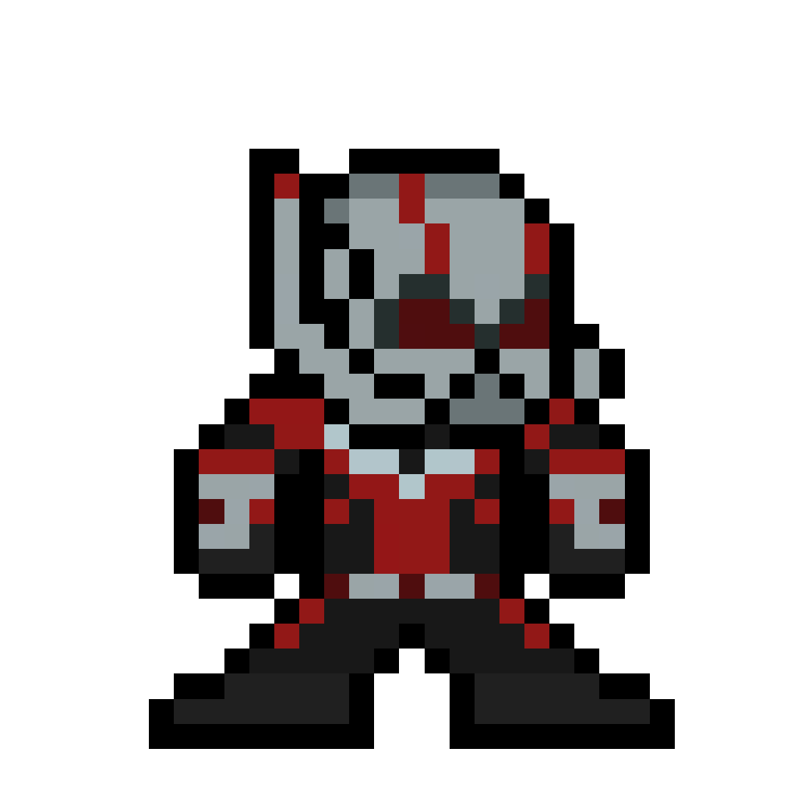

<!DOCTYPE html>
<html lang="en">
<head>
  <meta charset="UTF-8">
  <meta name="viewport" content="width=device-width, initial-scale=1.0">
  <title>SPACE COMPLEXITY // [⚛] ANT-MAN — ALGO-VENGERS</title>
  
  <meta name="description" content="Design & Analysis of Algorithms: SPACE COMPLEXITY. Mission 01: FOUNDATIONS.">
  <meta name="theme-color" content="#f8fafc">

  <!-- Google Fonts -->
  <link rel="preconnect" href="https://fonts.googleapis.com">
  <link rel="preconnect" href="https://fonts.gstatic.com" crossorigin>
  <link href="https://fonts.googleapis.com/css2?family=Chakra+Petch:wght@500;700&family=Plus+Jakarta+Sans:wght@400;500;600;700&family=Press+Start+2P&family=Silkscreen:wght@400;700&family=JetBrains+Mono:wght@400;600&display=swap" rel="stylesheet">

  <!-- KaTeX for beautiful math formulas -->
  <link rel="stylesheet" href="https://cdn.jsdelivr.net/npm/katex@0.16.9/dist/katex.min.css">
  <script defer src="https://cdn.jsdelivr.net/npm/katex@0.16.9/dist/katex.min.js"></script>
  <script defer src="https://cdn.jsdelivr.net/npm/katex@0.16.9/dist/contrib/auto-render.min.js"></script>

  <style>
    :root {
      --bg-main: #f8fafc;
      --border-dark: #0f172a;
      --text-main: #0f172a;
      --text-muted: #475569;
      --color-gold: #d97706;
      --color-cyan: #0284c7;
      --hero-accent: #ef4444;
      --badge-bg: #fee2e2;

      --font-pixel: 'Press Start 2P', monospace;
      --font-pixel-sub: 'Silkscreen', monospace;
      --font-body: 'Plus Jakarta Sans', system-ui, sans-serif;
      --font-code: 'JetBrains Mono', monospace;
      --top-bar-height: 32px;
      --nav-height: 72px;
      --container-max: 1100px;
    }

    *, *::before, *::after { box-sizing: border-box; margin: 0; padding: 0; }
    
    /* Pixelated retro mouse pointer */
    html, body {
      scroll-behavior: smooth;
      font-size: 16px;
      background-color: var(--bg-main);
      color: var(--text-main);
      font-family: var(--font-body);
      cursor: url("data:image/svg+xml,%3Csvg%20xmlns%3D%22http%3A//www.w3.org/2000/svg%22%20width%3D%2224%22%20height%3D%2224%22%20viewBox%3D%220%200%2024%2024%22%20shape-rendering%3D%22crispEdges%22%3E%20%3Cpath%20fill%3D%22%230f172a%22%20stroke%3D%22%23ffffff%22%20stroke-width%3D%221.5%22%20d%3D%22M2%202v18l5-5%204%208%203-1.5-4-8h6L2%202z%22/%3E%20%3C/svg%3E") 0 0, auto !important;
    }
    
    body {
      overflow-x: hidden;
      min-height: 100vh;
      line-height: 1.6;
      display: flex;
      flex-direction: column;
      background-color: var(--bg-main);
    }

    /* Native CSS Circular Hero Emblem Cursor on all interactive elements (ZERO TRAILING) */
    a, button, .pixel-btn, .topic-card, .mission-card, input, select, label, .top-progress-track-wrapper, .hero-speech-bubble, [role="button"], [data-hero-cursor], .quiz-opt-btn {
      cursor: url("data:image/svg+xml,%3Csvg%20xmlns%3D%22http%3A//www.w3.org/2000/svg%22%20width%3D%2232%22%20height%3D%2232%22%20viewBox%3D%220%200%2032%2032%22%20shape-rendering%3D%22crispEdges%22%3E%20%3Ccircle%20cx%3D%2216%22%20cy%3D%2216%22%20r%3D%2214%22%20fill%3D%22%23ef4444%22%20stroke%3D%22%230f172a%22%20stroke-width%3D%222%22/%3E%20%3Ccircle%20cx%3D%2216%22%20cy%3D%2216%22%20r%3D%224%22%20fill%3D%22%23ffffff%22%20stroke%3D%22%23000%22%20stroke-width%3D%221%22/%3E%20%3Cellipse%20cx%3D%2216%22%20cy%3D%2216%22%20rx%3D%2210%22%20ry%3D%223%22%20fill%3D%22none%22%20stroke%3D%22%23facc15%22%20stroke-width%3D%221.5%22%20transform%3D%22rotate%2830%2016%2016%29%22/%3E%20%3Cellipse%20cx%3D%2216%22%20cy%3D%2216%22%20rx%3D%2210%22%20ry%3D%223%22%20fill%3D%22none%22%20stroke%3D%22%23facc15%22%20stroke-width%3D%221.5%22%20transform%3D%22rotate%28-30%2016%2016%29%22/%3E%20%3C/svg%3E") 16 16, pointer !important;
    }

    .cyber-grid-bg {
      position: fixed; top: 0; left: 0; width: 100%; height: 100%;
      background-image: linear-gradient(to right, rgba(15, 23, 42, 0.05) 1px, transparent 1px), linear-gradient(to bottom, rgba(15, 23, 42, 0.05) 1px, transparent 1px);
      background-size: 32px 32px; pointer-events: none; z-index: 0;
    }
    .container { max-width: var(--container-max); margin: 0 auto; padding: 0 24px; position: relative; z-index: 2; }
    .pixel-heading { font-family: var(--font-pixel); letter-spacing: 1px; text-transform: uppercase; }

    /* Pixel Buttons */
    .pixel-btn {
      display: inline-flex; align-items: center; justify-content: center; gap: 8px;
      padding: 10px 18px; font-family: var(--font-pixel); font-size: 0.65rem;
      text-decoration: none; text-transform: uppercase; border: 3px solid var(--border-dark);
      position: relative; user-select: none;
      transition: transform 0.1s ease, box-shadow 0.1s ease;
      box-shadow: -3px 0 0 0 var(--border-dark), 3px 0 0 0 var(--border-dark), 0 -3px 0 0 var(--border-dark), 0 3px 0 0 var(--border-dark), 0 4px 0 0 var(--border-dark);
    }
    .pixel-btn:hover { transform: translateY(-2px); box-shadow: -3px 0 0 0 var(--border-dark), 3px 0 0 0 var(--border-dark), 0 -3px 0 0 var(--border-dark), 0 3px 0 0 var(--border-dark), 0 6px 0 0 var(--border-dark); }
    .pixel-btn:active { transform: translateY(2px); box-shadow: -3px 0 0 0 var(--border-dark), 3px 0 0 0 var(--border-dark), 0 -3px 0 0 var(--border-dark), 0 3px 0 0 var(--border-dark), 0 2px 0 0 var(--border-dark); }
    .pixel-btn-primary { background: #facc15; color: #0f172a; font-weight: bold; }
    .pixel-btn-secondary { background: #ffffff; color: var(--color-cyan); }
    .pixel-btn-accent { background: var(--hero-accent); color: #ffffff; }

    /* Sticky Navbar */
    .pixel-navbar {
      position: fixed; top: var(--top-bar-height); left: 0; width: 100%; height: var(--nav-height);
      background: rgba(255, 255, 255, 0.96); backdrop-filter: blur(10px);
      border-bottom: 3px solid var(--border-dark); z-index: 1000; display: flex; align-items: center;
    }
    .nav-container { display: flex; align-items: center; justify-content: space-between; width: 100%; max-width: var(--container-max); margin: 0 auto; padding: 0 24px; }
    .nav-brand { display: flex; align-items: center; gap: 12px; text-decoration: none; }
    .brand-icon { width: 36px; height: 36px; background: #facc15; border: 2px solid var(--border-dark); display: flex; align-items: center; justify-content: center; }
    .brand-icon svg { width: 22px; height: 22px; fill: var(--border-dark); }
    .brand-text { font-family: var(--font-pixel); font-size: 1.05rem; color: var(--border-dark); }
    .brand-text span { color: #dc2626; }
    .breadcrumbs { font-family: var(--font-pixel); font-size: 0.6rem; color: var(--text-muted); display: flex; align-items: center; gap: 6px; }
    .breadcrumbs a { color: var(--color-cyan); text-decoration: none; }

    /* Persistent Top Reading Progress Bar */
    #global-top-progress {
      position: fixed; top: 0; left: 0; width: 100%; height: var(--top-bar-height);
      background: #0f172a; border-bottom: 2px solid #000; z-index: 10002;
      display: flex; align-items: center; justify-content: space-between; padding: 0 16px;
      box-shadow: 0 2px 8px rgba(0,0,0,0.4);
    }
    .top-progress-hero-badge {
      display: flex; align-items: center; gap: 8px; flex-shrink: 0;
    }
    .top-hero-symbol-box {
      width: 22px; height: 22px; background: #fee2e2; color: #ef4444;
      border: 1.5px solid #ef4444; font-family: var(--font-pixel); font-size: 0.75rem;
      display: flex; align-items: center; justify-content: center; border-radius: 2px;
    }
    .top-hero-title {
      font-family: var(--font-pixel); font-size: 0.58rem; color: #f8fafc; letter-spacing: 0.5px;
    }
    .top-progress-track-wrapper {
      flex: 1; max-width: 650px; margin: 0 20px; height: 10px; background: #1e293b;
      border: 1.5px solid #475569; border-radius: 999px; position: relative; cursor: pointer;
    }
    .top-progress-fill-bar {
      height: 100%; width: 0%; background: linear-gradient(90deg, #ef4444, #f87171, #fca5a5); border-radius: 999px;
      transition: width 0.08s ease-out;
    }
    .top-progress-slider-marker {
      position: absolute; top: 50%; left: 0%; transform: translate(-50%, -50%);
      width: 22px; height: 22px; background: #0f172a; border: 2px solid #ef4444;
      border-radius: 50%; display: flex; align-items: center; justify-content: center;
      font-family: var(--font-pixel); font-size: 0.65rem; color: #ef4444;
      box-shadow: 0 0 10px #ef4444; pointer-events: none; transition: left 0.08s ease-out;
    }
    .top-progress-percent-readout {
      font-family: var(--font-pixel); font-size: 0.65rem; color: #facc15; min-width: 50px; text-align: right; flex-shrink: 0;
    }

    /* Main Container */
    main { flex: 1; padding-top: calc(var(--nav-height) + var(--top-bar-height) + 24px); padding-bottom: 60px; }

    /* Topic Hero Section */
    .topic-hero {
      background: #ffffff; border: 3px solid var(--border-dark);
      box-shadow: 0 6px 0 var(--border-dark); padding: 32px;
      margin-bottom: 32px; display: grid; grid-template-columns: auto 1fr; gap: 28px; align-items: center;
    }
    .hero-sprite-frame {
      width: 120px; height: 130px; background: var(--badge-bg);
      border: 3px solid var(--border-dark); display: flex; align-items: center; justify-content: center;
      position: relative; box-shadow: 0 4px 0 var(--border-dark); overflow: hidden;
    }
    .hero-avatar-img {
      max-width: 100px; max-height: 112px; width: auto; height: auto;
      object-fit: contain; image-rendering: pixelated;
      filter: drop-shadow(0 4px 8px rgba(0,0,0,0.25)); transition: transform 0.2s cubic-bezier(0.175, 0.885, 0.32, 1.275);
    }
    .topic-hero:hover .hero-avatar-img { transform: scale(1.1) translateY(-3px); }

    .hero-meta-tag {
      display: inline-block; font-family: var(--font-pixel); font-size: 0.6rem;
      background: #ffffff; border: 2px solid var(--border-dark); padding: 3px 10px;
      margin-bottom: 10px; font-weight: bold; color: var(--hero-accent); box-shadow: 0 2px 0 var(--border-dark);
    }
    .hero-title { font-size: 1.6rem; margin-bottom: 12px; line-height: 1.3; color: var(--border-dark); }
    .hero-tagline { font-family: var(--font-code); font-size: 0.95rem; color: var(--text-muted); margin-bottom: 14px; font-weight: 600; }
    .hero-quote-box {
      background: #f1f5f9; border-left: 4px solid var(--hero-accent);
      padding: 10px 14px; font-style: italic; color: #1e293b; font-size: 0.88rem;
    }

    /* Content Cards */
    .content-card {
      background: #ffffff; border: 3px solid var(--border-dark);
      box-shadow: 0 5px 0 var(--border-dark); padding: 28px; margin-bottom: 28px;
    }
    .card-heading {
      display: flex; justify-content: space-between; align-items: center;
      font-family: var(--font-pixel); font-size: 0.85rem; color: var(--border-dark);
      margin-bottom: 18px; border-bottom: 2px solid #e2e8f0; padding-bottom: 10px;
    }
    .card-desc-text { font-size: 0.95rem; color: #1e293b; line-height: 1.7; margin-bottom: 16px; }
    
    .math-callout {
      background: #f1f5f9; border: 2px solid var(--border-dark); padding: 16px 20px;
      font-size: 0.95rem; margin-bottom: 16px; color: #0f172a;
      box-shadow: 0 3px 0 var(--border-dark); overflow-x: auto;
    }

    /* Table */
    .algo-table { width: 100%; border-collapse: collapse; margin-top: 10px; font-size: 0.9rem; }
    .algo-table th, .algo-table td { border: 2px solid var(--border-dark); padding: 12px 14px; text-align: left; }
    .algo-table th { background: #f8fafc; font-family: var(--font-pixel); font-size: 0.65rem; color: var(--border-dark); }
    .complexity-badge {
      display: inline-block; font-family: var(--font-code); font-weight: bold;
      background: var(--badge-bg); color: var(--hero-accent); border: 1px solid var(--hero-accent);
      padding: 3px 8px; border-radius: 4px; font-size: 0.85rem;
    }

    /* Code Block */
    .code-box {
      background: #0f172a; color: #f8fafc; border: 3px solid var(--border-dark);
      padding: 20px; font-family: var(--font-code); font-size: 0.85rem; line-height: 1.6;
      overflow-x: auto; position: relative; box-shadow: 0 5px 0 var(--border-dark);
    }
    .code-header {
      display: flex; justify-content: space-between; align-items: center;
      margin-bottom: 10px; font-family: var(--font-pixel); font-size: 0.65rem; color: #94a3b8;
    }

    /* Interactive Visualizer Canvas */
    .viz-container {
      background: #f8fafc; border: 2px dashed var(--border-dark); padding: 20px;
      border-radius: 4px; display: flex; flex-direction: column; align-items: center; gap: 16px;
    }

    /* Speech Bubble */
    .hero-speech-bubble { transition: transform 0.15s ease; }
    .hero-speech-bubble:hover { transform: translateY(-2px); }

    /* Bottom Actions */
    .bottom-section {
      text-align: center; margin-top: 30px; display: flex; flex-direction: column;
      align-items: center; gap: 16px;
    }
    .pixel-divider { width: 180px; height: 4px; background: repeating-linear-gradient(to right, var(--border-dark) 0px, var(--border-dark) 8px, transparent 8px, transparent 16px); }
  </style>
</head>
<body>

  <div class="cyber-grid-bg"></div>

  <!-- Persistent Top Reading Progress Bar -->
  <div id="global-top-progress">
    <div class="top-progress-hero-badge">
      <div class="top-hero-symbol-box">[⚛]</div>
      <div class="top-hero-title">ANT-MAN // Quantum Particle</div>
    </div>
    <div class="top-progress-track-wrapper" id="global-progress-track" title="Click anywhere along the bar to jump in the dossier">
      <div class="top-progress-fill-bar" id="global-progress-fill"></div>
      <div class="top-progress-slider-marker" id="global-progress-marker">⚛</div>
    </div>
    <div class="top-progress-percent-readout" id="global-progress-pct">0%</div>
  </div>

  <!-- Sticky Navbar -->
  <header class="pixel-navbar">
    <div class="nav-container">
      <a href="index.html" class="nav-brand">
        <div class="brand-icon"><svg viewBox="0 0 24 24"><polygon points="12,2 8,20 11,20 12,14 16,14 17,20 20,20 15,2"/><polygon points="12,6 10,12 14,12" fill="#facc15"/></svg></div>
        <div class="brand-text">ALGO-<span>VENGERS</span></div>
      </a>

      <div class="breadcrumbs">
        <a href="index.html">HQ</a> <span>▶</span>
        <a href="missions.html">MISSIONS</a> <span>▶</span>
        <a href="mission-01.html">MISSION 01</a> <span>▶</span>
        <span style="color: var(--border-dark); font-weight: bold;">TOPIC 01</span>
      </div>

      <div>
        <a href="mission-01.html" class="pixel-btn pixel-btn-secondary" style="padding: 6px 12px; font-size: 0.6rem;">← MISSION HUB</a>
      </div>
    </div>
  </header>

  <main>
    <div class="container">

      <!-- Topic Hero Section -->
      <section class="topic-hero">
        <div class="hero-sprite-frame">
          
        </div>
        <div>
          <span class="hero-meta-tag">MISSION 01 // [⚛] ANT-MAN</span>
          <h1 class="hero-title pixel-heading">SPACE COMPLEXITY</h1>
          <div class="hero-tagline">QUANTUM STORAGE EFFICIENCY // Quantum Storage & Memory Regulation</div>
          <div class="hero-quote-box">"Just like shrinking into the Quantum Realm, space complexity analyzes how much physical and virtual memory an algorithm requires as input grows."</div>
        </div>
      </section>

      <!-- 01. S.H.I.E.L.D. Mission Briefing & Marvel Story -->
      <section class="content-card" style="border-left: 6px solid #ef4444;">
        <h2 class="card-heading">
          <span>01. S.H.I.E.L.D. MISSION BRIEFING // OP-ANT-01</span>
          <span style="font-size: 0.6rem; color: var(--hero-accent);">OPERATION SUBATOMIC CONTAINMENT</span>
        </h2>
        <div class="card-desc-text" style="font-size: 1.02rem; font-weight: 500; color: #0f172a; margin-bottom: 12px;">
          Hank Pym's regulator suit has entered the subatomic Quantum Realm. In this micro-dimension, suit RAM is strictly throttled to a finite hardware register limit. Scott Lang must reverse a critical coordinate array of quantum particles before temporal shear destroys the suit.
        </div>
        <div style="background: #f1f5f9; border: 2px dashed #475569; padding: 12px 16px; margin-bottom: 10px;">
          <div style="font-family: var(--font-pixel); font-size: 0.6rem; color: #dc2626; margin-bottom: 4px;">CRITICAL CRISIS:</div>
          <div style="font-size: 0.9rem; color: #334155;">Reversing an array of size N using a naive algorithm allocates a secondary copy array, consuming O(N) auxiliary space. In subatomic registers, this triggers a catastrophic stack overflow.</div>
        </div>
        <div style="background: #ecfdf5; border: 2px solid #10b981; padding: 12px 16px;">
          <div style="font-family: var(--font-pixel); font-size: 0.6rem; color: #059669; margin-bottom: 4px;">TACTICAL OBJECTIVE:</div>
          <div style="font-size: 0.9rem; color: #065f46;">Help Ant-Man swap particle coordinates in-place without exceeding the 100 KB suit RAM threshold.</div>
        </div>
      </section>

      <!-- 02. Formal Specification & Problem Invariants -->
      <section class="content-card">
        <h2 class="card-heading">
          <span>02. FORMAL PROBLEM SPECIFICATION & INVARIANTS</span>
          <span style="font-size: 0.6rem; color: var(--hero-accent);">ACADEMIC CURRICULUM</span>
        </h2>
        <div class="card-desc-text">
<p>Space Complexity measures the total amount of memory space an algorithm requires during its lifecycle as a function of the input length \(n\). Unlike execution speed, memory consumption is constrained by finite hardware bounds (L1/L2/L3 CPU caches, RAM limits, and OS thread stack allocations).</p>
<p>Formally, the total space \(S(P)\) required by program \(P\) is decomposed into two foundational components:</p>
<ul>
  <li><strong>Fixed Space Requirement (\(c\)):</strong> Memory independent of the characteristics of the inputs and outputs (e.g., instruction space, simple variables, fixed constants, and struct descriptors).</li>
  <li><strong>Variable Space Requirement (\(S_A(n)\)):</strong> Dynamic space dependent on instance characteristics, including dynamic array allocations, reference pointers, and recursion call stack frames.</li>
</ul>
<p><strong>Crucial Distinction:</strong> In technical interviews and DAA university examinations, always distinguish between <em>Total Space Complexity</em> (input buffer + working workspace) and <em>Auxiliary Space Complexity</em> (extra temporary workspace allocated beyond the input itself).</p>
</div>
      </section>

      <!-- Speech Bubble Callout 1 -->
      
    <div class="hero-speech-bubble" style="display: flex; align-items: flex-start; gap: 16px; background: #ffffff; border: 3px solid #0f172a; box-shadow: 0 4px 0 #0f172a; padding: 16px; margin: 24px 0;">
      <div style="width: 58px; height: 62px; background: #fee2e2; border: 2px solid #0f172a; display: flex; align-items: center; justify-content: center; flex-shrink: 0; box-shadow: 0 2px 4px rgba(0,0,0,0.2);">
        
      </div>
      <div style="position: relative; flex: 1;">
        <div style="font-family: var(--font-pixel); font-size: 0.62rem; color: #ef4444; margin-bottom: 4px;">
          [⚛] COMM-LINK // Scott Lang
        </div>
        <div style="font-size: 0.92rem; color: #1e293b; line-height: 1.6;">
          "Pym particles teach us that shrinking your memory footprint is what separates a rookie coder from an Avenger. Keep auxiliary variables down to O(1) in-place swaps to save the quantum realm!"
        </div>
      </div>
    </div>
    

      <!-- 03. Naive Approach vs Optimal Formulation -->
      <section class="content-card">
        <h2 class="card-heading">
          <span>03. BRUTE FORCE VS ALGORITHMIC OPTIMALITY</span>
          <span style="font-size: 0.6rem; color: var(--color-gold);">STRATEGIC COMPARISON</span>
        </h2>
        <div class="card-desc-text">
<p>Consider the problem of reversing an array of size \(n\). A naive implementation allocates a secondary mirror array, copying elements backwards. While simple, it requires \(\Theta(n)\) auxiliary memory. An optimal algorithm uses two convergent pointers to perform in-place swaps, shrinking auxiliary memory down to \(O(1)\) constant space.</p>
<div style="display:grid; grid-template-columns: 1fr 1fr; gap:16px; margin-top:12px;">
  <div style="background:#fee2e2; border:2px solid #ef4444; padding:12px; font-size:0.85rem;">
    <strong style="color:#b91c1c;">NAIVE APPROACH</strong><br>
    Allocates new array \(B[n]\).<br>
    Auxiliary Space: \(O(n)\)<br>
    Memory Waste: Doubles RAM footprint; risks out-of-memory faults on embedded microcontrollers.
  </div>
  <div style="background:#dcfce7; border:2px solid #16a34a; padding:12px; font-size:0.85rem;">
    <strong style="color:#15803d;">OPTIMAL IN-PLACE SWAP</strong><br>
    Pointers \(i=0, j=n-1\) swap elements.<br>
    Auxiliary Space: \(O(1)\)<br>
    Memory Efficiency: Conserves L1 cache; 0 heap allocations.
  </div>
</div>
</div>
        <div style="background: #eff6ff; border-left: 4px solid #2563eb; padding: 12px 16px; margin-top: 12px;">
          <div style="font-family: var(--font-pixel); font-size: 0.6rem; color: #1d4ed8; margin-bottom: 4px;">WHY THIS ALGORITHM WINS:</div>
          <div style="font-size: 0.9rem; color: #1e3a8a;">In-place two-pointer algorithm operates directly on the existing memory buffer using convergent indices (left and right), shrinking auxiliary memory to strictly O(1) constant space.</div>
        </div>
      </section>

      <!-- 04. Mathematical Formulation & Recurrence Derivation -->
      <section class="content-card">
        <h2 class="card-heading">
          <span>04. MATHEMATICAL PROOFS & RECURRENCES</span>
          <span style="font-size: 0.6rem; color: #2563eb;">KATEX FORMULATION</span>
        </h2>
        <div class="math-callout">
\[ S(P) = c + S_A(n) \]
<p>For recursive algorithms, the variable space is dominated by the activation records pushed onto the execution call stack:</p>
\[ S_{\text{stack}}(n) = \text{Maximum Recursion Depth} \times \text{Size of Single Activation Frame} \]
<p>For Divide-and-Conquer binary subdivision (e.g., standard Binary Search):</p>
\[ S(n) = S(n/2) + O(1) \implies S(n) = O(\log_2 n) \]
<p>For naive linear recursion (e.g., recursive factorial or unoptimized Fibonacci):</p>
\[ S(n) = S(n-1) + O(1) \implies S(n) = O(n) \]
</div>
      </section>

      <!-- Speech Bubble Callout 2 -->
      
    <div class="hero-speech-bubble" style="display: flex; align-items: flex-start; gap: 16px; background: #ffffff; border: 3px solid #0f172a; box-shadow: 0 4px 0 #0f172a; padding: 16px; margin: 24px 0;">
      <div style="width: 58px; height: 62px; background: #fee2e2; border: 2px solid #0f172a; display: flex; align-items: center; justify-content: center; flex-shrink: 0; box-shadow: 0 2px 4px rgba(0,0,0,0.2);">
        
      </div>
      <div style="position: relative; flex: 1;">
        <div style="font-family: var(--font-pixel); font-size: 0.62rem; color: #ef4444; margin-bottom: 4px;">
          [⚛] TACTICAL ADVICE // Scott Lang
        </div>
        <div style="font-size: 0.92rem; color: #1e293b; line-height: 1.6;">
          "Beware recursive depth traps! A 1MB thread stack will shatter into a stack overflow if your base case is missing. Tail-call optimization or iterative loops are your best shields."
        </div>
      </div>
    </div>
    

      <!-- 05. Concrete Worked Numerical Example -->
      <section class="content-card">
        <h2 class="card-heading">
          <span>05. STEP-BY-STEP WORKED CALCULATION EXAMPLE</span>
          <span style="font-size: 0.6rem; color: #16a34a;">NUMERICAL TRACE</span>
        </h2>
        <div class="card-desc-text">
<p><strong>Scenario:</strong> Calculating memory footprints for an integer array processing routine handling \(N = 10,000\) elements on a 64-bit architecture (each integer = 4 bytes, pointer = 8 bytes).</p>
<ol style="margin-left:20px; line-height:1.8;">
  <li><strong>Fixed Space:</strong> Base variables (loop index <code>i</code>, accumulator <code>total</code>, return pointer) = \(3 	imes 8 = 24\) bytes.</li>
  <li><strong>Input Array Space:</strong> \(10,000 	imes 4 = 40,000\) bytes \(pprox 39.06 	ext{ KB}\).</li>
  <li><strong>Algorithm A (Recursive with \(N\) frames):</strong> Call stack depth = 10,000. Each frame stores return address (8B), frame pointer (8B), and local parameters (16B) = 32 bytes.
      <br>\(S_{	ext{aux}} = 10,000 	imes 32 = 320,000 	ext{ bytes} pprox 312.5 	ext{ KB}\).</li>
  <li><strong>Algorithm B (Iterative Two-Pointer):</strong> Only 2 local indices stored in CPU registers.
      <br>\(S_{	ext{aux}} = 2 	imes 4 = 8 	ext{ bytes} = O(1)\).</li>
</ol>
<p><em>Conclusion:</em> Algorithm B reduces auxiliary memory consumption by a factor of 40,000x!</p>
</div>
      </section>

      <!-- 06. Interactive Physical Tactical Simulation Arena -->
      <section class="content-card">
        <h2 class="card-heading">
          <span>06. RETRO PHYSICAL GAME SIMULATION & YOUR CUSTOM INPUTS</span>
          <span style="font-size: 0.6rem; color: var(--color-cyan);">LIVE SIMULATION CONSOLE</span>
        </h2>
        <div class="viz-container">
          <div class="sim-tactical-header" style="display: flex; align-items: center; justify-content: space-between; width: 100%; margin-bottom: 16px; padding: 12px 18px; background: #0f172a; border: 3px solid var(--border-dark); color: #f8fafc; box-shadow: 0 4px 0 var(--border-dark);">
            <div style="display: flex; align-items: center; gap: 14px;">
              <div style="width: 52px; height: 56px; background: #fee2e2; border: 2px solid #ffffff; display: flex; align-items: center; justify-content: center; overflow: hidden; box-shadow: 0 2px 4px rgba(0,0,0,0.4);">
                
              </div>
              <div>
                <div style="font-family: var(--font-pixel); font-size: 0.7rem; color: #facc15;">OPERATOR: [⚛] ANT-MAN</div>
                <div style="font-family: var(--font-pixel-sub); font-size: 0.8rem; color: #94a3b8;">TACTICAL DAA PHYSICAL SIMULATION ENGINE</div>
              </div>
            </div>
            <div style="font-family: var(--font-pixel); font-size: 0.6rem; background: #1e293b; color: #22c55e; padding: 6px 12px; border: 1px solid #475569;">
              STATUS: READY
            </div>
          </div>
          
<div class="sim-game-wrapper" style="width: 100%; text-align: left;">
  <!-- Simulation Header -->
  <div style="display: flex; justify-content: space-between; align-items: center; margin-bottom: 12px; border-bottom: 2px solid #334155; padding-bottom: 8px;">
    <div>
      <span style="font-family: var(--font-pixel); font-size: 0.75rem; color: #ef4444;">MISSION: QUANTUM MEMORY REGULATOR</span>
      <p style="font-size: 0.82rem; color: #64748b; margin-top: 2px;">Watch Scott Lang shrink to O(1) in-place register swaps or clone into recursive O(N) heap frames.</p>
    </div>
    <div style="font-family: var(--font-pixel); font-size: 0.65rem; background: #1e293b; color: #22c55e; padding: 6px 10px; border: 1px solid #475569;">
      SUIT RAM: <span id="ant-mem-stat" style="color: #38bdf8;">O(1) CONSTANT</span>
    </div>
  </div>

  <!-- User Custom Input Bar -->
  <div style="background: #f1f5f9; border: 2px solid #0f172a; padding: 10px 14px; margin-bottom: 14px; display: flex; flex-wrap: wrap; align-items: center; justify-content: space-between; gap: 10px;">
    <div style="display: flex; align-items: center; gap: 8px;">
      <label style="font-family: var(--font-pixel); font-size: 0.62rem; color: #0f172a;">ARRAY SIZE (N):</label>
      <input type="number" id="ant-input-n" value="6" min="2" max="10" style="width: 55px; padding: 4px; font-family: var(--font-code); font-weight: bold; border: 2px solid #0f172a; text-align: center;">
      <button class="pixel-btn pixel-btn-secondary" id="ant-btn-apply" style="padding: 4px 10px; font-size: 0.58rem;">APPLY N</button>
    </div>
    <div style="display: flex; gap: 8px; align-items: center;">
      <span style="font-family: var(--font-pixel); font-size: 0.58rem; color: #64748b;">ACTIVE MODE:</span>
      <span id="ant-mode-label" style="font-family: var(--font-pixel); font-size: 0.62rem; background: #dcfce7; color: #16a34a; padding: 3px 8px; border: 1px solid #16a34a;">IN-PLACE O(1)</span>
    </div>
  </div>

  <!-- Animated Arena Stage -->
  <div style="background: #090d16; border: 3px solid #0f172a; padding: 18px; border-radius: 6px; box-shadow: inset 0 0 16px rgba(0,0,0,0.9); margin-bottom: 14px; position: relative; min-height: 220px;">
    <!-- RAM Meter Bar -->
    <div style="display: flex; justify-content: space-between; font-family: var(--font-pixel); font-size: 0.62rem; color: #94a3b8; margin-bottom: 6px;">
      <span>SUIT RAM CAPACITY (100 KB HARDWARE BOUND)</span>
      <span id="ant-ram-pct" style="color: #22c55e;">8 KB / 100 KB (8%)</span>
    </div>
    <div style="width: 100%; height: 16px; background: #1e293b; border: 2px solid #475569; margin-bottom: 16px; overflow: hidden;">
      <div id="ant-ram-bar" style="width: 8%; height: 100%; background: #22c55e; transition: width 0.3s ease, background 0.3s ease;"></div>
    </div>

    <!-- Ant-Man Physical Actor -->
    <div id="ant-hero-actor" style="position: absolute; top: 75px; left: 40px; transition: all 0.4s cubic-bezier(0.34, 1.56, 0.64, 1); z-index: 10; display: flex; flex-direction: column; align-items: center;">
      <div style="font-family: var(--font-pixel); font-size: 0.5rem; background: #ef4444; color: #fff; padding: 1px 4px; border-radius: 2px; margin-bottom: 2px;">⚛ SCOTT</div>
      
    </div>

    <!-- Active Memory Cells Corridor -->
    <div id="ant-cells-grid" style="display: flex; gap: 10px; min-height: 85px; align-items: center; justify-content: center; background: rgba(30, 41, 59, 0.5); border: 2px dashed #475569; padding: 14px; border-radius: 4px; overflow-x: auto;">
      <!-- Populated dynamically -->
    </div>
  </div>

  <!-- Live Intel Dialogue -->
  <div style="background: #ffffff; border: 2px solid #0f172a; padding: 10px 14px; margin-bottom: 14px; font-size: 0.88rem; min-height: 48px; display: flex; align-items: center;" id="ant-dialogue">
    💬 <strong>Scott Lang:</strong> "Quantum Regulator initialized! In-place pointer swaps require strictly O(1) auxiliary space."
  </div>

  <!-- Interactive Controls -->
  <div class="viz-controls" style="display: flex; gap: 10px; flex-wrap: wrap;">
    <button class="pixel-btn pixel-btn-primary" id="ant-btn-auto">▶ AUTO-RUN SIMULATION</button>
    <button class="pixel-btn pixel-btn-secondary" id="ant-btn-step">⏭ STEP IN-PLACE [O(1)]</button>
    <button class="pixel-btn pixel-btn-accent" id="ant-btn-recurse">🔴 ALLOCATE RECURSION [O(N)]</button>
    <button class="pixel-btn pixel-btn-secondary" id="ant-btn-reset">↺ RESET SUIT</button>
  </div>
</div>

        </div>
      </section>

      <!-- 07. Asymptotic Derivation & Complexity Matrix -->
      <section class="content-card">
        <h2 class="card-heading">
          <span>07. ASYMPTOTIC COMPLEXITY DERIVATION MATRIX</span>
          <span style="font-size: 0.6rem; color: var(--hero-accent);">DAA BIG-O BOUNDS</span>
        </h2>
        <table class="algo-table">
          <thead>
            <tr>
              <th>OPERATION / CASE</th>
              <th>ASYMPTOTIC BOUND</th>
              <th>SPACE / FOOTPRINT</th>
              <th>MATHEMATICAL INVARIANT</th>
            </tr>
          </thead>
          <tbody>
            
        <tr>
          <td style="font-weight: 600; color: #0f172a;">In-Place Two-Pointer Reverse</td>
          <td><span class="complexity-badge">O(1)</span></td>
          <td style="font-family: var(--font-code); color: #ef4444; font-weight: 600;">O(1) Auxiliary</td>
          <td style="color: #475569;">Strictly loop registers and temporary swap variable</td>
        </tr>
        <tr>
          <td style="font-weight: 600; color: #0f172a;">Binary Search (Iterative)</td>
          <td><span class="complexity-badge">O(1)</span></td>
          <td style="font-family: var(--font-code); color: #ef4444; font-weight: 600;">O(1) Auxiliary</td>
          <td style="color: #475569;">Three index pointers (low, mid, high) only</td>
        </tr>
        <tr>
          <td style="font-weight: 600; color: #0f172a;">Binary Search (Recursive)</td>
          <td><span class="complexity-badge">O(log n)</span></td>
          <td style="font-family: var(--font-code); color: #ef4444; font-weight: 600;">O(log n) Auxiliary</td>
          <td style="color: #475569;">Call stack depth bounded by tree height log2(n)</td>
        </tr>
        <tr>
          <td style="font-weight: 600; color: #0f172a;">Merge Sort</td>
          <td><span class="complexity-badge">O(n)</span></td>
          <td style="font-family: var(--font-code); color: #ef4444; font-weight: 600;">O(n) Auxiliary</td>
          <td style="color: #475569;">Temporary merge buffers proportional to array slice size</td>
        </tr>
        <tr>
          <td style="font-weight: 600; color: #0f172a;">Dynamic Programming (2D Table)</td>
          <td><span class="complexity-badge">O(n^2)</span></td>
          <td style="font-family: var(--font-code); color: #ef4444; font-weight: 600;">O(n^2) Auxiliary</td>
          <td style="color: #475569;">Full memoization table of size n * n</td>
        </tr>
          </tbody>
        </table>
      </section>

      <!-- 08. Interactive Asymptotic Growth Comparison Slider -->
      <section class="content-card">
        <h2 class="card-heading">
          <span>08. ASYMPTOTIC GROWTH COMPARISON</span>
          <span style="font-size: 0.6rem; color: var(--color-gold);">LIVE CALCULATOR</span>
        </h2>
        <div style="margin-bottom: 16px;">
          <p class="card-desc-text">Drag the input size slider \(n\) to observe step counts diverge across complexity classes in real-time:</p>
          <div style="background: #f1f5f9; border: 2px solid #0f172a; padding: 14px; margin-bottom: 14px; display: flex; align-items: center; justify-content: space-between; gap: 14px; flex-wrap: wrap;">
            <div style="display: flex; align-items: center; gap: 12px;">
              <label style="font-family: var(--font-pixel); font-size: 0.68rem; color: #0f172a;">INPUT SIZE (N):</label>
              <input type="range" id="growth-slider" min="1" max="10" value="4" style="width: 160px; accent-color: #ef4444;">
              <span id="growth-n-val" style="font-family: var(--font-code); font-weight: bold; background: #0f172a; color: #facc15; padding: 4px 10px; border-radius: 4px;">n = 16</span>
            </div>
            <div style="font-size: 0.8rem; color: #475569;">
              Compare: \(O(1), O(\log n), O(n), O(n \log n), O(n^2), O(2^n)\)
            </div>
          </div>
          
          <div id="growth-bars-container" style="display: flex; flex-direction: column; gap: 10px; background: #ffffff; border: 2px solid #0f172a; padding: 16px;">
            <!-- Dynamically populated via JS -->
          </div>
        </div>
      </section>

      <!-- 09. Practical Systems Design & Code Implementation -->
      <section class="content-card">
        <h2 class="card-heading">
          <span>09. PRACTICAL SYSTEMS DESIGN & REFERENCE IMPLEMENTATION</span>
          <span style="font-size: 0.6rem; color: #8b5cf6;">PRODUCTION ARCHITECTURE</span>
        </h2>
        <div class="card-desc-text">
<p><strong>1. Thread Stack Limits & Stack Overflow:</strong> In OS environments like Linux and Windows, the default thread stack is typically 8 MB or 1 MB. An unoptimized recursion with \(N = 10^6\) frames will violently crash with <code>SIGSEGV (Stack Overflow)</code>, while heap memory could comfortably hold gigabytes.</p>
<p><strong>2. CPU Cache Locality:</strong> In-place algorithms with \(O(1)\) auxiliary memory preserve CPU cache lines (L1/L2 caches). Allocating secondary heap buffers introduces cache misses, pointer indirection overhead, and triggers garbage collector pauses.</p>
<p><strong>3. Space-Time Trade-offs:</strong> Often algorithms trade auxiliary space to reduce time complexity (e.g., Hash Tables achieve \(O(1)\) lookup by utilizing \(O(n)\) memory, whereas linear scan takes \(O(1)\) space but \(O(n)\) time).</p>
</div>
        
        <div class="code-box" style="margin-top: 18px;">
          <div class="code-header">
            <span>ALGORITHM SPECIFICATION // PYTHON 3</span>
            <span>UTF-8 // VERIFIED OPTIMAL</span>
          </div>
          <pre><code>def reverse_array_inplace(arr: list[int]) -> None:
    """
    Reverses an array in-place with O(1) auxiliary space.
    Space Complexity: O(1) Auxiliary, O(n) Total
    Time Complexity: O(n)
    """
    left = 0
    right = len(arr) - 1
    
    # In-place convergent two-pointer swap
    while left < right:
        arr[left], arr[right] = arr[right], arr[left]
        left += 1
        right -= 1

def recursive_sum(arr: list[int], index: int = 0) -> int:
    """
    Recursive summation demonstrating O(n) call-stack space.
    Space Complexity: O(n) Auxiliary (Stack Depth = len(arr))
    """
    if index >= len(arr):
        return 0
    # Each call pushes a new activation frame onto the call stack
    return arr[index] + recursive_sum(arr, index + 1)</code></pre>
        </div>
      </section>

      <!-- Speech Bubble Callout 3 -->
      
    <div class="hero-speech-bubble" style="display: flex; align-items: flex-start; gap: 16px; background: #ffffff; border: 3px solid #0f172a; box-shadow: 0 4px 0 #0f172a; padding: 16px; margin: 24px 0;">
      <div style="width: 58px; height: 62px; background: #fee2e2; border: 2px solid #0f172a; display: flex; align-items: center; justify-content: center; flex-shrink: 0; box-shadow: 0 2px 4px rgba(0,0,0,0.2);">
        
      </div>
      <div style="position: relative; flex: 1;">
        <div style="font-family: var(--font-pixel); font-size: 0.62rem; color: #ef4444; margin-bottom: 4px;">
          [⚛] S.H.I.E.L.D. FIELD DIRECTIVE // ANT-MAN
        </div>
        <div style="font-size: 0.92rem; color: #1e293b; line-height: 1.6;">
          "Just like shrinking into the Quantum Realm, space complexity analyzes how much physical and virtual memory an algorithm requires as input grows." Remember: asymptotic guarantees hold when n grows large, but cache coherence, memory layout, and branch prediction dominate for small inputs in production hardware.
        </div>
      </div>
    </div>
    

      <!-- 10. Interactive Mini Quiz (4 Questions) -->
      <section class="content-card">
        <div style="display: flex; justify-content: space-between; align-items: center; margin-bottom: 18px; border-bottom: 2px solid #e2e8f0; padding-bottom: 12px; flex-wrap: wrap; gap: 8px;">
          <h2 class="card-heading" style="margin-bottom: 0; border-bottom: none; padding-bottom: 0;">
            <span>10. MISSION ASSESSMENT // TEST YOUR MASTERY</span>
          </h2>
          <div style="font-family: var(--font-pixel); font-size: 0.68rem; background: #0f172a; color: #22c55e; padding: 6px 12px; border: 2px solid var(--border-dark);" id="quiz-score-badge">
            SCORE: 0 / 4 (0%)
          </div>
        </div>
        <p class="card-desc-text">Test your mastery of SPACE COMPLEXITY with these university exam questions:</p>
        <div>
          
        <div class="quiz-card" id="quiz-card-0" style="background: #ffffff; border: 2px solid #0f172a; padding: 18px; margin-bottom: 16px; box-shadow: 0 4px 0 #0f172a;">
          <div style="display: flex; justify-content: space-between; align-items: center; margin-bottom: 10px;">
            <span style="font-family: var(--font-pixel); font-size: 0.68rem; color: #ef4444;">QUESTION 1 OF 4</span>
            <span class="quiz-status-tag" id="quiz-status-0" style="font-family: var(--font-pixel); font-size: 0.58rem; background: #e2e8f0; color: #475569; padding: 4px 8px;">UNANSWERED</span>
          </div>
          <div style="font-size: 0.95rem; font-weight: 600; color: #0f172a; margin-bottom: 14px; line-height: 1.5;">
            What is the primary difference between Total Space Complexity and Auxiliary Space Complexity?
          </div>
          <div style="display: grid; grid-template-columns: 1fr; gap: 8px; margin-bottom: 12px;">
            
            <button class="quiz-opt-btn" data-qid="0" data-oid="0" style="text-align: left; padding: 10px 14px; background: #f8fafc; border: 2px solid #0f172a; font-size: 0.88rem; font-family: var(--font-body); font-weight: 600; color: #0f172a; transition: all 0.15s ease; box-shadow: 0 2px 0 #0f172a;">
              <span style="font-family: var(--font-pixel); font-size: 0.62rem; margin-right: 8px; color: #ef4444;">[A]</span> Auxiliary space includes the input buffer, whereas total space does not
            </button>
            
            <button class="quiz-opt-btn" data-qid="0" data-oid="1" style="text-align: left; padding: 10px 14px; background: #f8fafc; border: 2px solid #0f172a; font-size: 0.88rem; font-family: var(--font-body); font-weight: 600; color: #0f172a; transition: all 0.15s ease; box-shadow: 0 2px 0 #0f172a;">
              <span style="font-family: var(--font-pixel); font-size: 0.62rem; margin-right: 8px; color: #ef4444;">[B]</span> Auxiliary space is only the extra or temporary workspace used beyond the input size
            </button>
            
            <button class="quiz-opt-btn" data-qid="0" data-oid="2" style="text-align: left; padding: 10px 14px; background: #f8fafc; border: 2px solid #0f172a; font-size: 0.88rem; font-family: var(--font-body); font-weight: 600; color: #0f172a; transition: all 0.15s ease; box-shadow: 0 2px 0 #0f172a;">
              <span style="font-family: var(--font-pixel); font-size: 0.62rem; margin-right: 8px; color: #ef4444;">[C]</span> Total space only counts heap allocations, ignoring call stacks
            </button>
            
            <button class="quiz-opt-btn" data-qid="0" data-oid="3" style="text-align: left; padding: 10px 14px; background: #f8fafc; border: 2px solid #0f172a; font-size: 0.88rem; font-family: var(--font-body); font-weight: 600; color: #0f172a; transition: all 0.15s ease; box-shadow: 0 2px 0 #0f172a;">
              <span style="font-family: var(--font-pixel); font-size: 0.62rem; margin-right: 8px; color: #ef4444;">[D]</span> They are identical terms with no distinction in DAA
            </button>
            
          </div>
          <div class="quiz-feedback-box" id="quiz-feedback-0" style="display: none; padding: 12px 14px; border: 2px solid #0f172a; font-size: 0.85rem; line-height: 1.6; margin-top: 10px;">
          </div>
        </div>
        
        <div class="quiz-card" id="quiz-card-1" style="background: #ffffff; border: 2px solid #0f172a; padding: 18px; margin-bottom: 16px; box-shadow: 0 4px 0 #0f172a;">
          <div style="display: flex; justify-content: space-between; align-items: center; margin-bottom: 10px;">
            <span style="font-family: var(--font-pixel); font-size: 0.68rem; color: #ef4444;">QUESTION 2 OF 4</span>
            <span class="quiz-status-tag" id="quiz-status-1" style="font-family: var(--font-pixel); font-size: 0.58rem; background: #e2e8f0; color: #475569; padding: 4px 8px;">UNANSWERED</span>
          </div>
          <div style="font-size: 0.95rem; font-weight: 600; color: #0f172a; margin-bottom: 14px; line-height: 1.5;">
            What is the auxiliary space complexity of standard recursive Merge Sort on an array of size n?
          </div>
          <div style="display: grid; grid-template-columns: 1fr; gap: 8px; margin-bottom: 12px;">
            
            <button class="quiz-opt-btn" data-qid="1" data-oid="0" style="text-align: left; padding: 10px 14px; background: #f8fafc; border: 2px solid #0f172a; font-size: 0.88rem; font-family: var(--font-body); font-weight: 600; color: #0f172a; transition: all 0.15s ease; box-shadow: 0 2px 0 #0f172a;">
              <span style="font-family: var(--font-pixel); font-size: 0.62rem; margin-right: 8px; color: #ef4444;">[A]</span> O(1)
            </button>
            
            <button class="quiz-opt-btn" data-qid="1" data-oid="1" style="text-align: left; padding: 10px 14px; background: #f8fafc; border: 2px solid #0f172a; font-size: 0.88rem; font-family: var(--font-body); font-weight: 600; color: #0f172a; transition: all 0.15s ease; box-shadow: 0 2px 0 #0f172a;">
              <span style="font-family: var(--font-pixel); font-size: 0.62rem; margin-right: 8px; color: #ef4444;">[B]</span> O(log n)
            </button>
            
            <button class="quiz-opt-btn" data-qid="1" data-oid="2" style="text-align: left; padding: 10px 14px; background: #f8fafc; border: 2px solid #0f172a; font-size: 0.88rem; font-family: var(--font-body); font-weight: 600; color: #0f172a; transition: all 0.15s ease; box-shadow: 0 2px 0 #0f172a;">
              <span style="font-family: var(--font-pixel); font-size: 0.62rem; margin-right: 8px; color: #ef4444;">[C]</span> O(n)
            </button>
            
            <button class="quiz-opt-btn" data-qid="1" data-oid="3" style="text-align: left; padding: 10px 14px; background: #f8fafc; border: 2px solid #0f172a; font-size: 0.88rem; font-family: var(--font-body); font-weight: 600; color: #0f172a; transition: all 0.15s ease; box-shadow: 0 2px 0 #0f172a;">
              <span style="font-family: var(--font-pixel); font-size: 0.62rem; margin-right: 8px; color: #ef4444;">[D]</span> O(n^2)
            </button>
            
          </div>
          <div class="quiz-feedback-box" id="quiz-feedback-1" style="display: none; padding: 12px 14px; border: 2px solid #0f172a; font-size: 0.85rem; line-height: 1.6; margin-top: 10px;">
          </div>
        </div>
        
        <div class="quiz-card" id="quiz-card-2" style="background: #ffffff; border: 2px solid #0f172a; padding: 18px; margin-bottom: 16px; box-shadow: 0 4px 0 #0f172a;">
          <div style="display: flex; justify-content: space-between; align-items: center; margin-bottom: 10px;">
            <span style="font-family: var(--font-pixel); font-size: 0.68rem; color: #ef4444;">QUESTION 3 OF 4</span>
            <span class="quiz-status-tag" id="quiz-status-2" style="font-family: var(--font-pixel); font-size: 0.58rem; background: #e2e8f0; color: #475569; padding: 4px 8px;">UNANSWERED</span>
          </div>
          <div style="font-size: 0.95rem; font-weight: 600; color: #0f172a; margin-bottom: 14px; line-height: 1.5;">
            If a recursive function halves the input size at each level and performs O(1) work, what is its call stack space complexity?
          </div>
          <div style="display: grid; grid-template-columns: 1fr; gap: 8px; margin-bottom: 12px;">
            
            <button class="quiz-opt-btn" data-qid="2" data-oid="0" style="text-align: left; padding: 10px 14px; background: #f8fafc; border: 2px solid #0f172a; font-size: 0.88rem; font-family: var(--font-body); font-weight: 600; color: #0f172a; transition: all 0.15s ease; box-shadow: 0 2px 0 #0f172a;">
              <span style="font-family: var(--font-pixel); font-size: 0.62rem; margin-right: 8px; color: #ef4444;">[A]</span> O(1)
            </button>
            
            <button class="quiz-opt-btn" data-qid="2" data-oid="1" style="text-align: left; padding: 10px 14px; background: #f8fafc; border: 2px solid #0f172a; font-size: 0.88rem; font-family: var(--font-body); font-weight: 600; color: #0f172a; transition: all 0.15s ease; box-shadow: 0 2px 0 #0f172a;">
              <span style="font-family: var(--font-pixel); font-size: 0.62rem; margin-right: 8px; color: #ef4444;">[B]</span> O(log n)
            </button>
            
            <button class="quiz-opt-btn" data-qid="2" data-oid="2" style="text-align: left; padding: 10px 14px; background: #f8fafc; border: 2px solid #0f172a; font-size: 0.88rem; font-family: var(--font-body); font-weight: 600; color: #0f172a; transition: all 0.15s ease; box-shadow: 0 2px 0 #0f172a;">
              <span style="font-family: var(--font-pixel); font-size: 0.62rem; margin-right: 8px; color: #ef4444;">[C]</span> O(n)
            </button>
            
            <button class="quiz-opt-btn" data-qid="2" data-oid="3" style="text-align: left; padding: 10px 14px; background: #f8fafc; border: 2px solid #0f172a; font-size: 0.88rem; font-family: var(--font-body); font-weight: 600; color: #0f172a; transition: all 0.15s ease; box-shadow: 0 2px 0 #0f172a;">
              <span style="font-family: var(--font-pixel); font-size: 0.62rem; margin-right: 8px; color: #ef4444;">[D]</span> O(n log n)
            </button>
            
          </div>
          <div class="quiz-feedback-box" id="quiz-feedback-2" style="display: none; padding: 12px 14px; border: 2px solid #0f172a; font-size: 0.85rem; line-height: 1.6; margin-top: 10px;">
          </div>
        </div>
        
        <div class="quiz-card" id="quiz-card-3" style="background: #ffffff; border: 2px solid #0f172a; padding: 18px; margin-bottom: 16px; box-shadow: 0 4px 0 #0f172a;">
          <div style="display: flex; justify-content: space-between; align-items: center; margin-bottom: 10px;">
            <span style="font-family: var(--font-pixel); font-size: 0.68rem; color: #ef4444;">QUESTION 4 OF 4</span>
            <span class="quiz-status-tag" id="quiz-status-3" style="font-family: var(--font-pixel); font-size: 0.58rem; background: #e2e8f0; color: #475569; padding: 4px 8px;">UNANSWERED</span>
          </div>
          <div style="font-size: 0.95rem; font-weight: 600; color: #0f172a; margin-bottom: 14px; line-height: 1.5;">
            Which data structure technique achieves O(1) space reversal of an array?
          </div>
          <div style="display: grid; grid-template-columns: 1fr; gap: 8px; margin-bottom: 12px;">
            
            <button class="quiz-opt-btn" data-qid="3" data-oid="0" style="text-align: left; padding: 10px 14px; background: #f8fafc; border: 2px solid #0f172a; font-size: 0.88rem; font-family: var(--font-body); font-weight: 600; color: #0f172a; transition: all 0.15s ease; box-shadow: 0 2px 0 #0f172a;">
              <span style="font-family: var(--font-pixel); font-size: 0.62rem; margin-right: 8px; color: #ef4444;">[A]</span> Allocating a secondary copy queue
            </button>
            
            <button class="quiz-opt-btn" data-qid="3" data-oid="1" style="text-align: left; padding: 10px 14px; background: #f8fafc; border: 2px solid #0f172a; font-size: 0.88rem; font-family: var(--font-body); font-weight: 600; color: #0f172a; transition: all 0.15s ease; box-shadow: 0 2px 0 #0f172a;">
              <span style="font-family: var(--font-pixel); font-size: 0.62rem; margin-right: 8px; color: #ef4444;">[B]</span> Two-pointer convergent in-place element swapping
            </button>
            
            <button class="quiz-opt-btn" data-qid="3" data-oid="2" style="text-align: left; padding: 10px 14px; background: #f8fafc; border: 2px solid #0f172a; font-size: 0.88rem; font-family: var(--font-body); font-weight: 600; color: #0f172a; transition: all 0.15s ease; box-shadow: 0 2px 0 #0f172a;">
              <span style="font-family: var(--font-pixel); font-size: 0.62rem; margin-right: 8px; color: #ef4444;">[C]</span> Using recursive post-order traversal
            </button>
            
            <button class="quiz-opt-btn" data-qid="3" data-oid="3" style="text-align: left; padding: 10px 14px; background: #f8fafc; border: 2px solid #0f172a; font-size: 0.88rem; font-family: var(--font-body); font-weight: 600; color: #0f172a; transition: all 0.15s ease; box-shadow: 0 2px 0 #0f172a;">
              <span style="font-family: var(--font-pixel); font-size: 0.62rem; margin-right: 8px; color: #ef4444;">[D]</span> Creating a Hash Map index
            </button>
            
          </div>
          <div class="quiz-feedback-box" id="quiz-feedback-3" style="display: none; padding: 12px 14px; border: 2px solid #0f172a; font-size: 0.85rem; line-height: 1.6; margin-top: 10px;">
          </div>
        </div>
        
        </div>
      </section>

      <!-- 11. Key Exam Takeaways -->
      <section class="content-card">
        <h2 class="card-heading">
          <span>11. S.H.I.E.L.D. DEBRIEF & KEY EXAM TAKEAWAYS</span>
          <span style="font-size: 0.6rem; color: var(--border-dark);">REVISION CHECKLIST</span>
        </h2>
        <p class="card-desc-text">Always distinguish between total memory (input + working) and auxiliary memory (extra workspace). In competitive programming and memory-constrained microcontrollers, reducing auxiliary space from O(n) to O(1) prevents stack overflows and out-of-memory faults.</p>
      </section>

      <!-- Navigation & Return -->
      <section class="bottom-section">
        <div class="pixel-divider"></div>
        <div style="display: flex; gap: 14px; margin-top: 8px; flex-wrap: wrap; justify-content: center;">
          <a href="mission-01.html" class="pixel-btn pixel-btn-primary">← BACK TO MISSION 01</a>
          <a href="missions.html" class="pixel-btn pixel-btn-secondary">ALL MISSIONS</a>
          <a href="index.html" class="pixel-btn pixel-btn-accent">RETURN TO HQ</a>
        </div>
      </section>

    </div>
  </main>

  <footer style="background: #0f172a; color: #f8fafc; border-top: 3px solid #000; padding: 24px 0; text-align: center; font-family: var(--font-pixel); font-size: 0.62rem; margin-top: 40px;">
    <div class="container">
      ALGO-VENGERS // DESIGN & ANALYSIS OF ALGORITHMS // S.H.I.E.L.D. DATABASE
    </div>
  </footer>

  <script>
    /* Retro Web Audio Engine */
    class RetroAudioEngine {
      constructor() {
        this.ctx = null;
        this.init();
      }
      init() {
        const AudioContext = window.AudioContext || window.webkitAudioContext;
        if (AudioContext) this.ctx = new AudioContext();
      }
      ensure() {
        if (this.ctx && this.ctx.state === 'suspended') this.ctx.resume();
      }
      playTone(freq, type, duration, vol=0.1) {
        try {
          this.ensure();
          if (!this.ctx) return;
          const osc = this.ctx.createOscillator();
          const gain = this.ctx.createGain();
          osc.type = type;
          osc.frequency.setValueAtTime(freq, this.ctx.currentTime);
          gain.gain.setValueAtTime(vol, this.ctx.currentTime);
          gain.gain.exponentialRampToValueAtTime(0.001, this.ctx.currentTime + duration);
          osc.connect(gain);
          gain.connect(this.ctx.destination);
          osc.start();
          osc.stop(this.ctx.currentTime + duration);
        } catch(e) {}
      }
      playClick() { this.playTone(600, 'square', 0.05, 0.08); }
      playHover() { this.playTone(400, 'sine', 0.03, 0.04); }
      playSuccess() {
        try {
          this.ensure();
          if (!this.ctx) return;
          const now = this.ctx.currentTime;
          [523.25, 659.25, 783.99, 1046.50].forEach((freq, idx) => {
            const osc = this.ctx.createOscillator();
            const gain = this.ctx.createGain();
            osc.type = 'triangle';
            osc.frequency.setValueAtTime(freq, now + idx * 0.08);
            gain.gain.setValueAtTime(0.08, now + idx * 0.08);
            gain.gain.exponentialRampToValueAtTime(0.001, now + idx * 0.08 + 0.15);
            osc.connect(gain);
            gain.connect(this.ctx.destination);
            osc.start(now + idx * 0.08);
            osc.stop(now + idx * 0.08 + 0.15);
          });
        } catch(e) {}
      }
      playError() {
        try {
          this.ensure();
          if (!this.ctx) return;
          const now = this.ctx.currentTime;
          [220, 164.81].forEach((freq, idx) => {
            const osc = this.ctx.createOscillator();
            const gain = this.ctx.createGain();
            osc.type = 'sawtooth';
            osc.frequency.setValueAtTime(freq, now + idx * 0.1);
            gain.gain.setValueAtTime(0.08, now + idx * 0.1);
            gain.gain.exponentialRampToValueAtTime(0.001, now + idx * 0.1 + 0.15);
            osc.connect(gain);
            gain.connect(this.ctx.destination);
            osc.start(now + idx * 0.1);
            osc.stop(now + idx * 0.1 + 0.15);
          });
        } catch(e) {}
      }
    }
    const retroAudio = new RetroAudioEngine();

    const interactiveQuery = 'a, button, .pixel-btn, .topic-card, .mission-card, input, select, label, .top-progress-track-wrapper, .hero-speech-bubble, [role="button"], [data-hero-cursor], .quiz-opt-btn';

    document.addEventListener('mouseover', (e) => {
      if (e.target.closest(interactiveQuery)) {
        retroAudio.playHover();
      }
    });

    /* Persistent Top Reading Progress Bar */
    const topFillBar = document.getElementById('global-progress-fill');
    const topMarker = document.getElementById('global-progress-marker');
    const topPct = document.getElementById('global-progress-pct');
    const topTrack = document.getElementById('global-progress-track');

    function updateTopReadingProgress() {
      const scrollTop = window.scrollY || document.documentElement.scrollTop;
      const docHeight = document.documentElement.scrollHeight - window.innerHeight;
      const pct = docHeight > 0 ? Math.min(100, Math.max(0, Math.round((scrollTop / docHeight) * 100))) : 0;
      
      if (topFillBar) topFillBar.style.width = pct + '%';
      if (topPct) topPct.textContent = pct + '%';
      if (topMarker) {
        topMarker.style.left = pct + '%';
      }
    }

    window.addEventListener('scroll', updateTopReadingProgress, { passive: true });
    updateTopReadingProgress();

    topTrack?.addEventListener('click', (e) => {
      const rect = topTrack.getBoundingClientRect();
      const clickX = e.clientX - rect.left;
      const ratio = Math.max(0, Math.min(1, clickX / rect.width));
      const docHeight = document.documentElement.scrollHeight - window.innerHeight;
      window.scrollTo({ top: ratio * docHeight, behavior: 'smooth' });
      retroAudio.playClick();
    });

    /* Asymptotic Growth Comparison Slider */
    const growthSlider = document.getElementById('growth-slider');
    const growthNVal = document.getElementById('growth-n-val');
    const growthBarsContainer = document.getElementById('growth-bars-container');
    const nPowers = [2, 4, 8, 16, 32, 64, 128, 256, 512, 1024];

    function renderGrowthBars() {
      const idx = parseInt(growthSlider.value) - 1;
      const n = nPowers[idx];
      growthNVal.textContent = `n = ${n}`;
      
      const c_const = 1;
      const c_log = Math.round(Math.log2(n) * 10) / 10;
      const c_lin = n;
      const c_nlogn = Math.round(n * Math.log2(n));
      const c_quad = n * n;
      const c_exp = n <= 32 ? Math.pow(2, n) : '1.79e+308+';

      const classes = [
        { name: 'O(1) Constant', ops: c_const, color: '#22c55e', pct: 2 },
        { name: 'O(log n) Logarithmic', ops: c_log, color: '#38bdf8', pct: Math.min(100, (c_log / 10) * 12) },
        { name: 'O(n) Linear', ops: c_lin, color: '#facc15', pct: Math.min(100, (c_lin / 1024) * 45) },
        { name: 'O(n log n) Linearithmic', ops: c_nlogn, color: '#f97316', pct: Math.min(100, (c_nlogn / 10240) * 70) },
        { name: 'O(n^2) Quadratic', ops: c_quad, color: '#ef4444', pct: Math.min(100, Math.max(10, (c_quad / 1000000) * 100)) },
        { name: 'O(2^n) Exponential', ops: c_exp, color: '#881337', pct: 100 }
      ];

      growthBarsContainer.innerHTML = classes.map(c => `
        <div>
          <div style="display: flex; justify-content: space-between; font-family: var(--font-pixel); font-size: 0.62rem; margin-bottom: 4px;">
            <span style="color: ${c.color};">${c.name}</span>
            <span style="font-family: var(--font-code); font-weight: bold; color: #0f172a;">${typeof c.ops === 'number' ? c.ops.toLocaleString() : c.ops} operations</span>
          </div>
          <div style="width: 100%; height: 14px; background: #f1f5f9; border: 1.5px solid #0f172a; border-radius: 2px; overflow: hidden;">
            <div style="width: ${c.pct}%; height: 100%; background: ${c.color}; transition: width 0.3s ease;"></div>
          </div>
        </div>
      `).join('');
    }

    growthSlider?.addEventListener('input', () => {
      renderGrowthBars();
      retroAudio.playHover();
    });
    renderGrowthBars();

    /* Interactive Mini-Quiz Logic */
    const quizData = [{'answer': 1, 'explanation': 'Auxiliary space measures only the extra temporary memory allocated by the algorithm to solve the problem, excluding the input data itself.'}, {'answer': 2, 'explanation': 'Merge Sort requires O(n) auxiliary space to store elements during the merge phase across temporary buffers.'}, {'answer': 1, 'explanation': 'Halving the input at each step yields a recursion tree of height log2(n), requiring O(log n) activation frames on the stack.'}, {'answer': 1, 'explanation': 'Convergent two-pointer swap operates strictly in-place, allocating only two index variables in registers (O(1) auxiliary space).'}];
    let quizScore = 0;
    const answeredQuestions = new Set();

    document.querySelectorAll('.quiz-opt-btn').forEach(btn => {
      btn.addEventListener('click', () => {
        const qid = parseInt(btn.dataset.qid);
        const oid = parseInt(btn.dataset.oid);
        if (answeredQuestions.has(qid)) return;
        answeredQuestions.add(qid);

        const q = quizData[qid];
        const card = document.getElementById(`quiz-card-${qid}`);
        const statusTag = document.getElementById(`quiz-status-${qid}`);
        const feedbackBox = document.getElementById(`quiz-feedback-${qid}`);
        const allOpts = card.querySelectorAll('.quiz-opt-btn');

        allOpts.forEach((b, idx) => {
          if (idx === q.answer) {
            b.style.background = '#dcfce7';
            b.style.borderColor = '#16a34a';
            b.style.color = '#15803d';
          } else if (idx === oid && oid !== q.answer) {
            b.style.background = '#fee2e2';
            b.style.borderColor = '#ef4444';
            b.style.color = '#b91c1c';
          }
          b.disabled = true;
        });

        feedbackBox.style.display = 'block';
        if (oid === q.answer) {
          quizScore++;
          retroAudio.playSuccess();
          statusTag.textContent = 'CORRECT';
          statusTag.style.background = '#dcfce7';
          statusTag.style.color = '#16a34a';
          feedbackBox.style.background = '#f0fdf4';
          feedbackBox.style.borderColor = '#16a34a';
          feedbackBox.innerHTML = `<strong>✨ EXCELLENT WORK!</strong><br>${q.explanation}`;
        } else {
          retroAudio.playError();
          statusTag.textContent = 'INCORRECT';
          statusTag.style.background = '#fee2e2';
          statusTag.style.color = '#ef4444';
          feedbackBox.style.background = '#fef2f2';
          feedbackBox.style.borderColor = '#ef4444';
          feedbackBox.innerHTML = `<strong>⚠️ TACTICAL REVIEW:</strong><br>${q.explanation}`;
        }

        const pct = Math.round((quizScore / quizData.length) * 100);
        const scoreBadge = document.getElementById('quiz-score-badge');
        if (scoreBadge) scoreBadge.textContent = `SCORE: ${quizScore} / ${quizData.length} (${pct}%)`;
      });
    });

    // KaTeX Auto-Render Math
    document.addEventListener("DOMContentLoaded", function() {
      if (typeof renderMathInElement !== 'undefined') {
        renderMathInElement(document.body, {
          delimiters: [
            {left: "$$", right: "$$", display: true},
            {left: "\\[", right: "\\]", display: true},
            {left: "$", right: "$", display: false},
            {left: "\\(", right: "\\)", display: false}
          ],
          throwOnError: false
        });
      }
    });

    // Visualizer Specific Game Loop Logic
    
const antGrid = document.getElementById('ant-cells-grid');
const antBar = document.getElementById('ant-ram-bar');
const antPct = document.getElementById('ant-ram-pct');
const antStat = document.getElementById('ant-mem-stat');
const antDiag = document.getElementById('ant-dialogue');
const antHero = document.getElementById('ant-hero-actor');
const antHeroImg = document.getElementById('ant-hero-img');
const antInputN = document.getElementById('ant-input-n');
const antModeLabel = document.getElementById('ant-mode-label');
let antSize = 6;
let antLeft = 0, antRight = 5;
let antAutoTimer = null;
let antIsRecursive = false;
let antData = [12, 24, 36, 48, 60, 72];

function initAntGrid() {
  antGrid.innerHTML = '';
  antLeft = 0;
  antRight = antSize - 1;
  antData = Array.from({length: antSize}, (_, i) => (i + 1) * 12);
  for (let i = 0; i < antSize; i++) {
    const c = document.createElement('div');
    c.id = `ant-cell-${i}`;
    c.style.cssText = 'background: #1e293b; color: #fff; border: 2px solid #64748b; font-family: var(--font-pixel); font-size: 0.65rem; padding: 12px 14px; border-radius: 4px; text-align: center; min-width: 60px; transition: all 0.3s ease;';
    c.innerHTML = `[${i}]<br><span style="color:#38bdf8; font-size:0.75rem;">${antData[i]}</span>`;
    antGrid.appendChild(c);
  }
  antBar.style.width = '8%';
  antBar.style.background = '#22c55e';
  antPct.textContent = '8 KB / 100 KB (8%)';
  antStat.textContent = 'O(1) CONSTANT';
  antStat.style.color = '#22c55e';
  antHero.style.left = '40px';
  antHeroImg.style.transform = 'scale(1)';
  antDiag.innerHTML = `💬 <strong>Scott Lang:</strong> "Array of size N=${antSize} loaded in memory. Ready for tactical execution!"`;
}
initAntGrid();

document.getElementById('ant-btn-apply')?.addEventListener('click', () => {
  retroAudio.playClick();
  antSize = Math.max(2, Math.min(10, parseInt(antInputN.value) || 6));
  initAntGrid();
});

document.getElementById('ant-btn-step')?.addEventListener('click', () => {
  retroAudio.playClick();
  stepAntInplace();
});

function stepAntInplace() {
  if (antLeft >= antRight) {
    antDiag.innerHTML = `🎉 <strong>Scott Lang:</strong> "Array completely reversed in-place! Auxiliary space remained strictly O(1) throughout."`;
    antHero.style.left = '50%';
    antHeroImg.style.transform = 'scale(1.3)';
    return;
  }
  const cellL = document.getElementById(`ant-cell-${antLeft}`);
  const cellR = document.getElementById(`ant-cell-${antRight}`);
  if (cellL && cellR) {
    cellL.style.borderColor = '#facc15';
    cellR.style.borderColor = '#facc15';
    // Move Scott to left index
    const rectL = cellL.getBoundingClientRect();
    const gridRect = antGrid.getBoundingClientRect();
    antHero.style.left = `${rectL.left - gridRect.left + 20}px`;
    antHeroImg.style.transform = 'scale(0.85)';
    
    // Swap data
    const temp = antData[antLeft];
    antData[antLeft] = antData[antRight];
    antData[antRight] = temp;
    
    setTimeout(() => {
      cellL.innerHTML = `[${antLeft}]<br><span style="color:#22c55e; font-size:0.75rem;">${antData[antLeft]}</span>`;
      cellR.innerHTML = `[${antRight}]<br><span style="color:#22c55e; font-size:0.75rem;">${antData[antRight]}</span>`;
      cellL.style.background = '#065f46';
      cellR.style.background = '#065f46';
      antDiag.innerHTML = `⚛️ <strong>Scott Lang:</strong> "In-place swap: arr[${antLeft}] ⟷ arr[${antRight}]. No heap buffers allocated!"`;
      antLeft++;
      antRight--;
    }, 250);
  }
}

document.getElementById('ant-btn-recurse')?.addEventListener('click', () => {
  retroAudio.playClick();
  antModeLabel.textContent = 'RECURSION O(N)';
  antModeLabel.style.background = '#fee2e2';
  antModeLabel.style.color = '#ef4444';
  antBar.style.width = '88%';
  antBar.style.background = '#ef4444';
  antPct.textContent = '88 KB / 100 KB (88%)';
  antStat.textContent = 'O(N) CALL STACK';
  antStat.style.color = '#ef4444';
  antDiag.innerHTML = `⚠️ <strong>Scott Lang:</strong> "Stack frames piling up! Each recursive call allocates return addresses and local buffers. High memory footprint!"`;
  antHeroImg.style.transform = 'scale(1.4)';
});

document.getElementById('ant-btn-auto')?.addEventListener('click', () => {
  retroAudio.playClick();
  if (antAutoTimer) {
    clearInterval(antAutoTimer);
    antAutoTimer = null;
    document.getElementById('ant-btn-auto').textContent = '▶ AUTO-RUN SIMULATION';
  } else {
    document.getElementById('ant-btn-auto').textContent = '⏸ PAUSE';
    antAutoTimer = setInterval(() => {
      if (antLeft >= antRight) {
        clearInterval(antAutoTimer);
        antAutoTimer = null;
        document.getElementById('ant-btn-auto').textContent = '▶ AUTO-RUN SIMULATION';
      } else {
        stepAntInplace();
      }
    }, 700);
  }
});

document.getElementById('ant-btn-reset')?.addEventListener('click', () => {
  retroAudio.playClick();
  if (antAutoTimer) { clearInterval(antAutoTimer); antAutoTimer = null; }
  document.getElementById('ant-btn-auto').textContent = '▶ AUTO-RUN SIMULATION';
  initAntGrid();
});

  </script>
</body>
</html>
